As we move towards a spatial computing future, the physical and digital worlds becomes increasingly blended.
Lil’ Garden is a gamified experience that explores the question:
How can we leverage the affordances of spatial computing to translate physical experiences into XR?
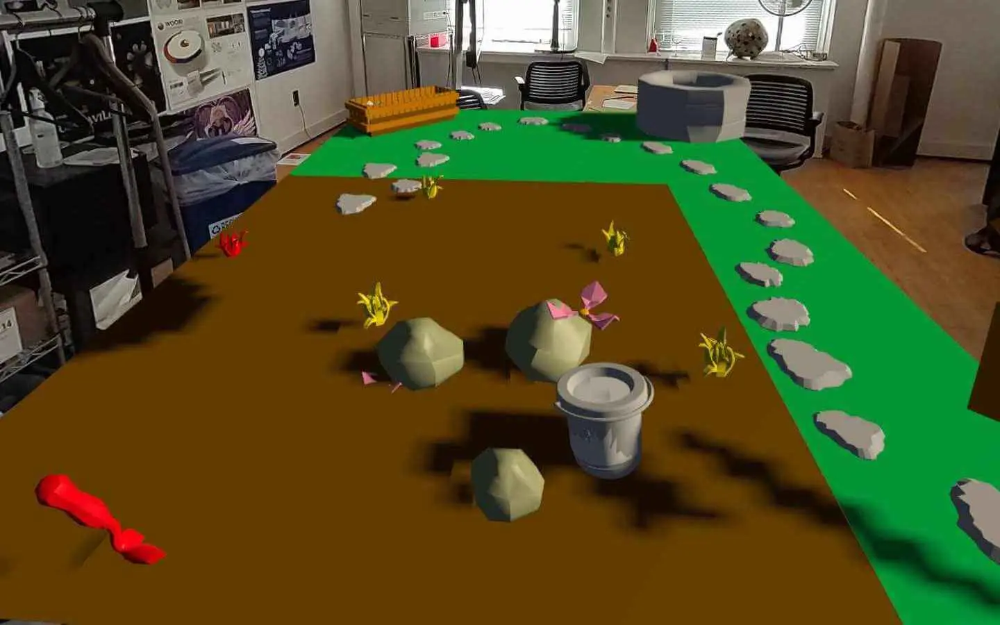
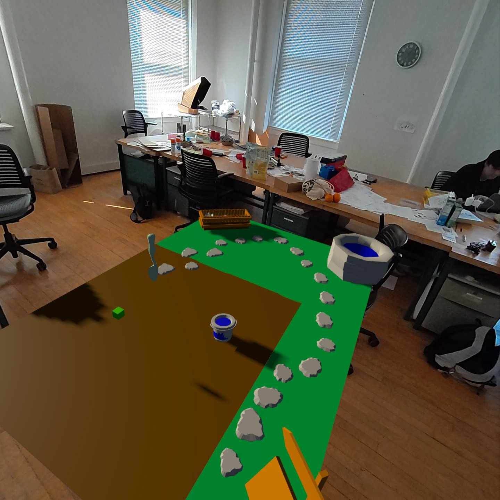
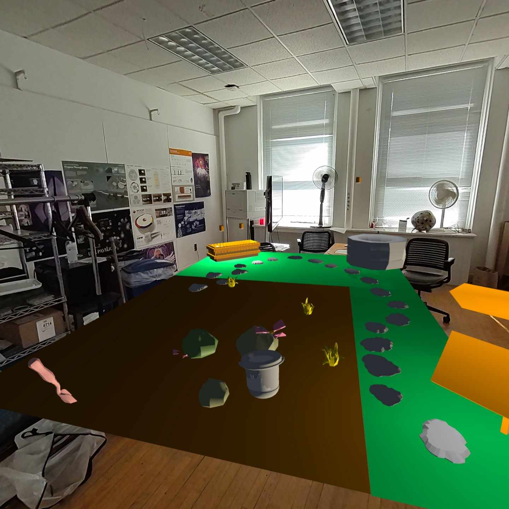
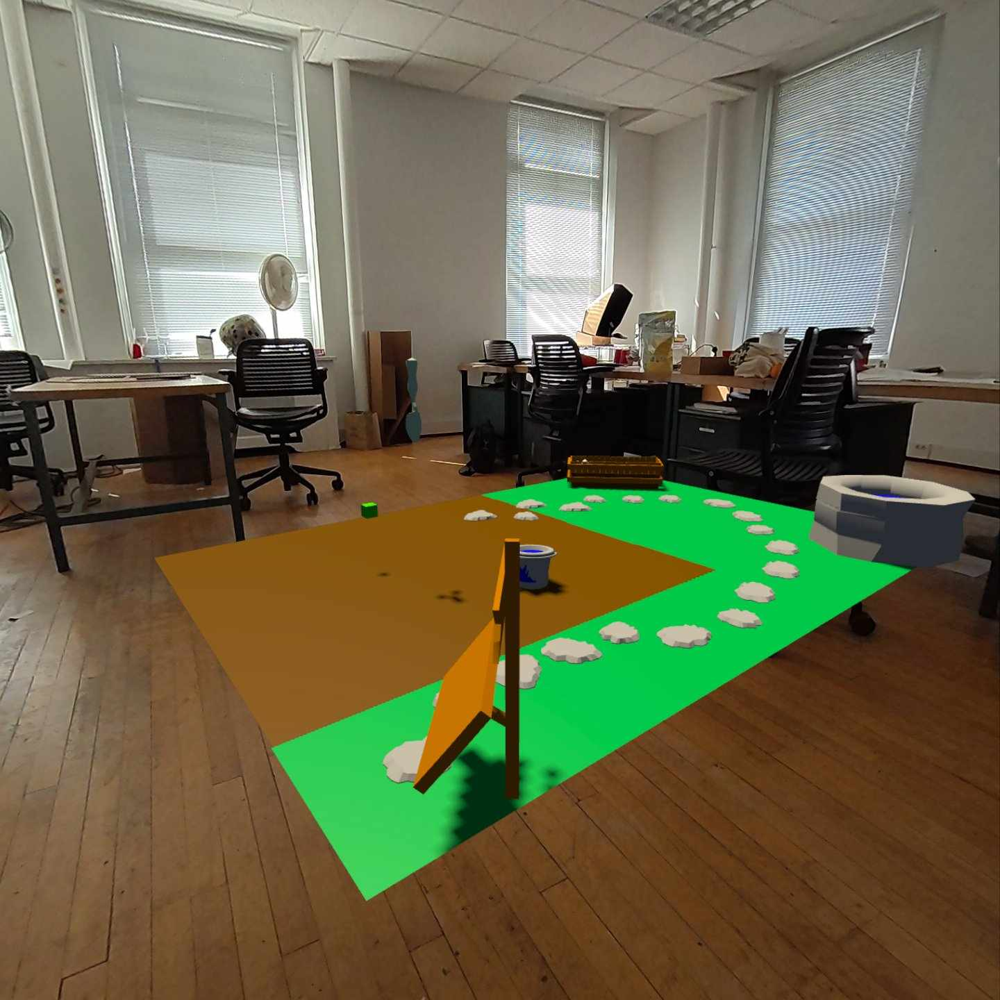
Why do we care for the digital?
The digital garden is a motif that has existed since the first online games as a means of
coming into the digital. However, we wanted to understand what makes people care for these
inanimate spaces, and how to design for them?
Our research led us to four key values within the nurturing experience:
Accountability, Patience, Protection, and Affection. From these, we
began designing a gamified experience that provided opportunities for
building connections between “gardeners” and their digital garden.
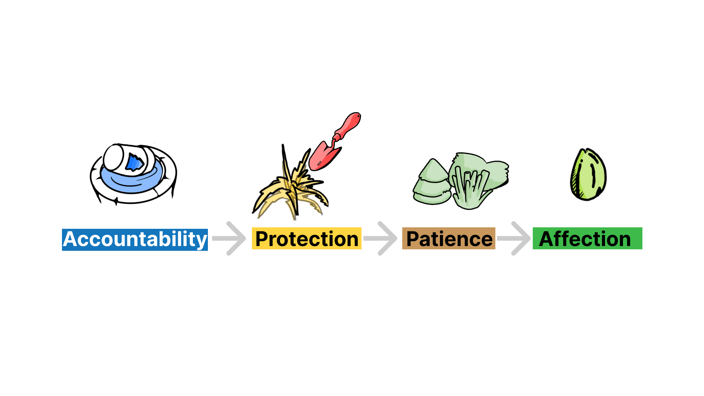
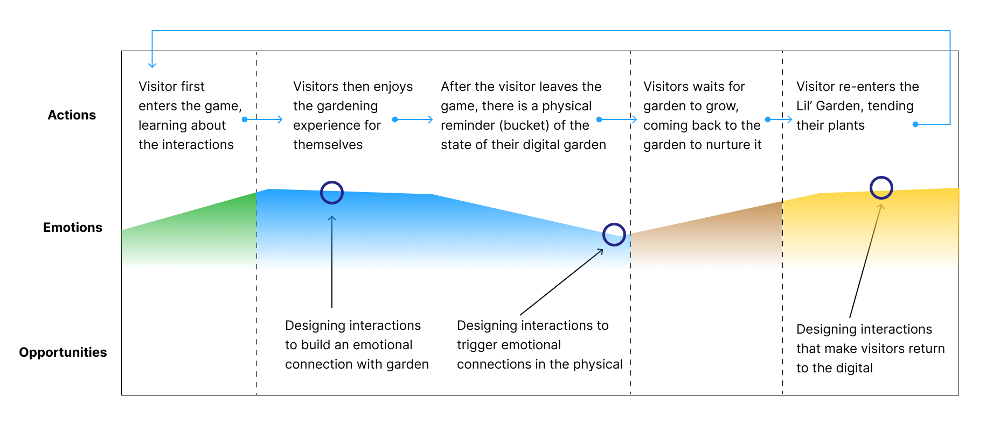
Designing the Nurture Game Loop
From the user journey, we created several different interaction points to materialize the
nurturing values. Gardeners would engage in the full journeys of their plants, from
planting a seed, watering it, protecting it from weeds, and receiving flowers and seeds to
restart the process.
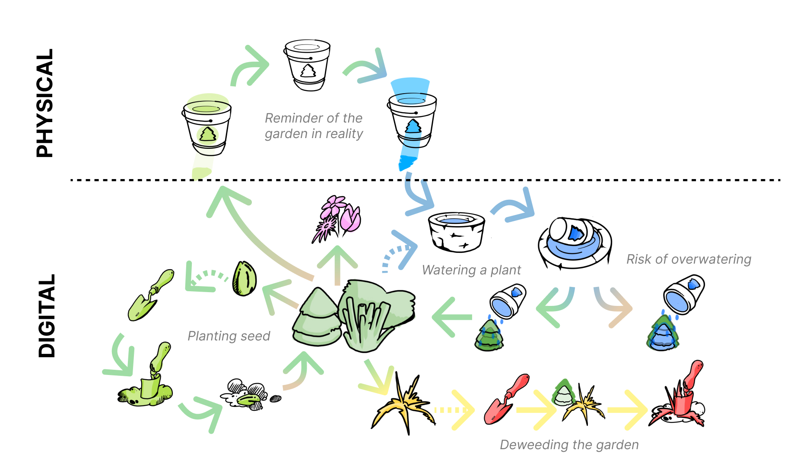
Transitioning between Reality and Virtuality
A key part of this process is bringing people back to the digital.
Beyond having the experience in passthrough,
we wanted a tangible interface that would fit into the nurture cycle we
curated. Our intervention was a timer like bucket that would reflect the
cumulative growth of your garden in your space. As more time passes, the
light slowly fades, until indicating a desperate need to water your plants.
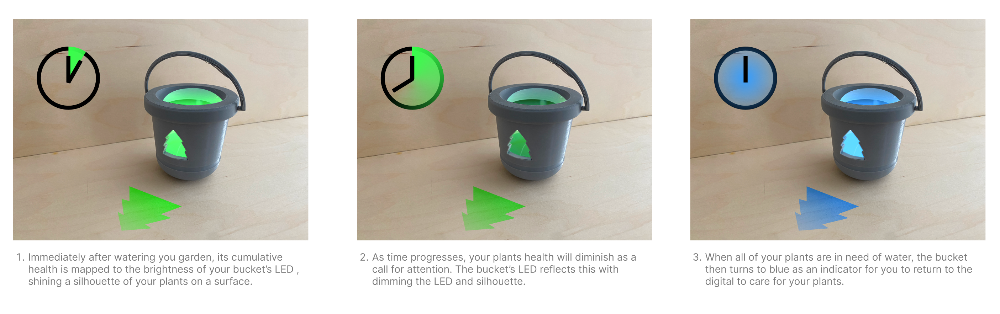
Prototyping Interactions
Throughout the experience, the goal is to create a seamless transition between
interactions and keeping it easily comprehensible. The game consists of 3
interactable objects – bucket, well, and shovel – and 4 major interactions – planting,
filling bucket, watering, and deweeding.
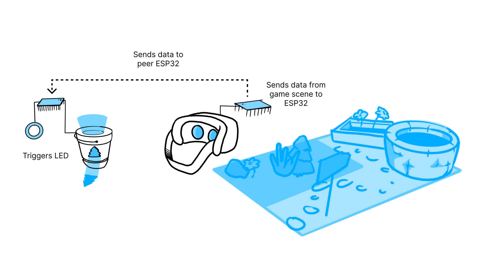
Developing an Onboarding
To make our garden interactions as intuitive and possible, we went through several
iterations of a map design that could teach gardeners about the space. Using a stone
path, we build an onboarding experience that would teach each interaction of growing
a plant as you follow the path through wooden signs, maintaining the integrity of the
garden aesthetic.
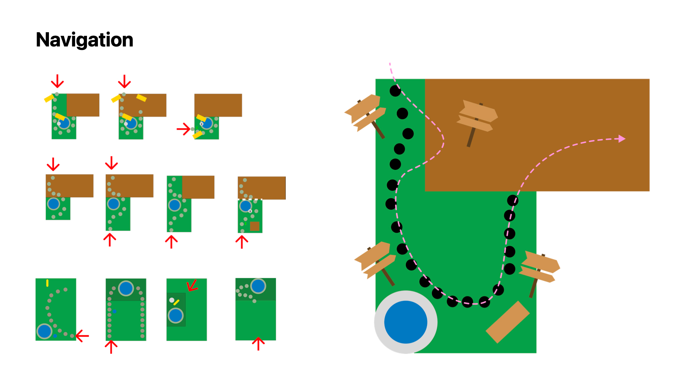
Creating a Visual Language
We wanted the garden itself to lean into an animated experience, staying clear of the
uncanny valley which would affect the nurturing experience. Our plants and weeds were
built from iconographic studies to abstract plant shapes yet maintain its essential
qualities. These would translate to our bucket design that existed in both the physical and digital.
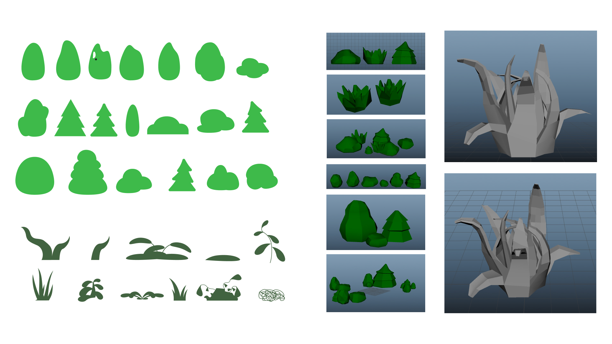
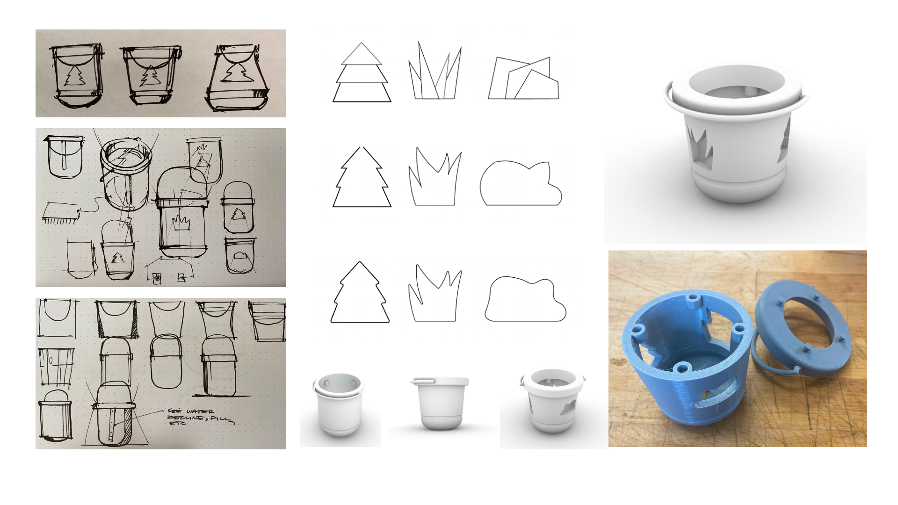
Developing from Playtesting
Throughout every iteration, we began to add more qualities based on
playtesting with our peers. This led to a fruitful discussion that helped
create gameplay features like shovels, digging, and accessibility featuress
like raising the garden, legibility with signs, etc.
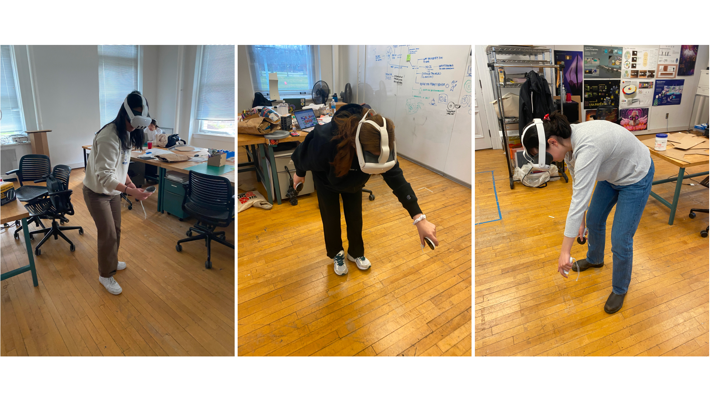
Project Reflection
As my first project using the Oculus, this was a great way to start exploring the affordances of “spatial” digital
interactions. I’m proud that we prototyped a fully loopable experience in passthrough VR, and now have
many steps for how we can further our initial goal of fostering nurture in the digital.
1 – Time: What would happen if we gave garden to a person to care for a whole week. What would the outcome be and what opportunities for redesigning the experience would we find?
2 – Integrated Product System: How can we further explore the transition between physical and digital by having more physical cues of the digital garden (e.g custom controller mods).
3 –AR Capabilities: While we were able to hack the oculus for passthrough, how can we lean more into integrating this garden with an existing indoor space? What if I could grow my plants on walls and different counter tops rather than this floating digital plane?